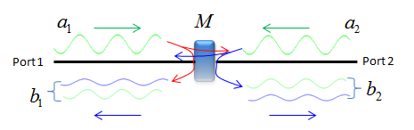
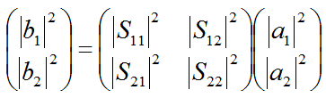
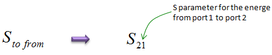
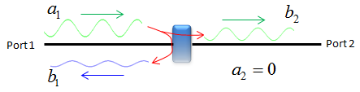
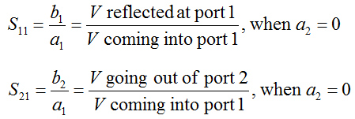
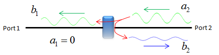
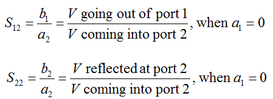

|
RF - S parameter Home : www.sharetechnote.com |
|
S parameter stands for 'Scattering' Parameter. It is a kind of power ratio between components of a signal going through various different path.
Let's suppose we have a component labeled as 'M' as shown below. Now you input (impinge) a signal toward the device at Port 1. Where the signal would go ? Ideally there would be three possible paths this signal (energy) follow through. i) a portion that hits the device and bounce back towards the port 1 ii) a portion that goes through the device and travel towards Port 2 iii) a portion that gets lost as unusuable energy (e.g, heat) Now you input (impinge) a signal toward the device at Port 2. Where the signal would go ? Ideally there would be three possible paths this signal (energy) follow through. i) a portion that hits the device and bounce back towards the port 2 ii) a portion that goes through the device and travel towards Port 1 iii) a portion that gets lost as unusuable energy (e.g, heat)
The possible paths listed above can be illustrated as shown below. The only missing part in this illustration is the portion that gets lost as unusual energy.

The definition of S parameters is defined in mathematical form as shown below. From this equation, you would get a big picture saying "S parameter(matrix) defines the relationship between the signal impinging into each port of the device and the portion that is getting away from the device".

This is the case where a device has only two ports (one input and one output) and the S parameter matrix is 2 x 2. Before getting into the meaning of each parameter, I want you to understand the basic notation of the paramter. S parameter has two subscript and the meaning of each subscript means as shown below.

When measuring each of these S parameter, we don't put the signal to both ports at the same time. First we put a signal to one port and measure half set of S parameters and then we put a signal to the other port and measure the remaining half set of S parameters.
The equipment (e.g, Network Analyzer) measures the S11, S21 by inputting a signal from Port 1 and ground Port 2. From this setting, we can get two S parameters as shown below.


The equipment (e.g, Network Analyzer) measures the S22, S12 by inputting a signal from Port 2 and ground Port 1. From this setting, we can get two S parameters as shown below.


|